Stained Glass World
My style is called Stained Glass World and is based on the style of stained glass.
This style was inspired by a stained glass map made by Helen Tosteson and considers the organic feeling of glass in addition to the process of creating stained glass


I was drawn to the contrasting textures in the pieces used for stained glass, the diversity of shades used to represent a color within a composition, and the thick borders between pieces. (Photo credit: Henry Knight)
Using Procreate, I drew different patterns in an attempt to emmulate the texture of glass. This included designs that had more curves to simulate bumpy glass and designs with short, straight strokes to simulate smoother glass. I pulled inspiration from the included pieces from this Kate Leroux digital stained glass map.
The borders of the map reflect those of stained glass in different stages. Within stained glass, black is a common color for the finished soldered borders between glass pieces. The border between water and land is a solid black to represent the more fixed separation between them. This is a flawed idea as water is a ebbing and flowing feature that is changing in location, and changing the surrounding landscape. However, this style holds the features of land and water as pieces of the environment as an ideal.
Copper, in contrast, is the color of foil that is placed on the edges of glass pieces. I interpreted the copper to symbolize features that act as boundaries between different pieces that are not finalized. This thinking was applied towards roads and walking based features. While these are features that exist in space, I don't view them as cemented (no pun intended) features in the landscape because of the arbitrary nature of their placement.

Keeping with the focus on the features of the physical and built environment, administrative boundaries were not included.
Two types of type were used. The script Italianno and the serif Cardo These are displayed in yellow with black halos.


 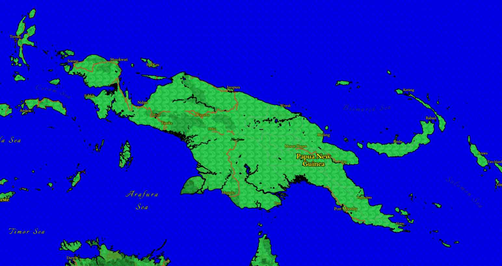
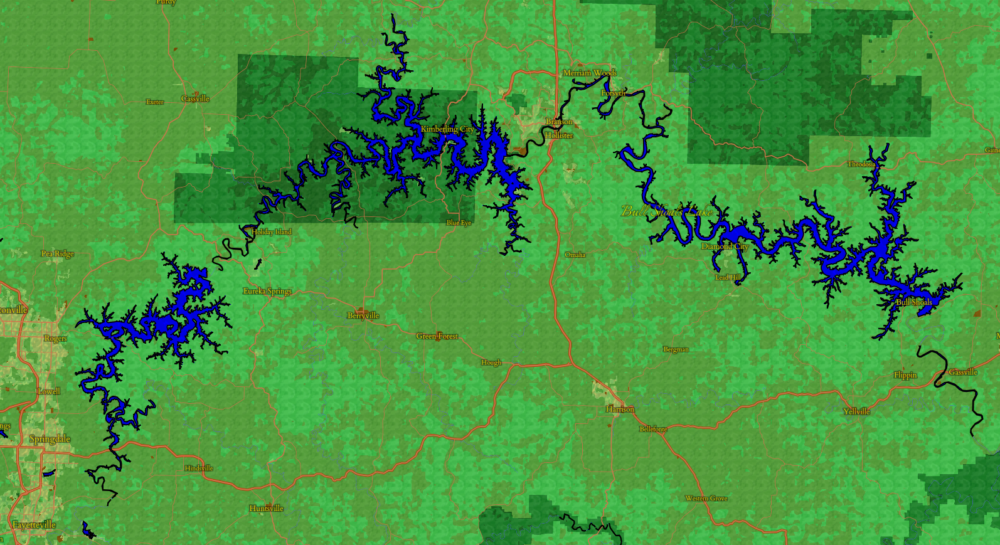
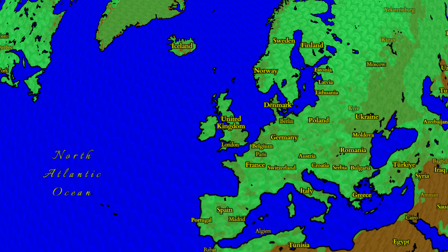
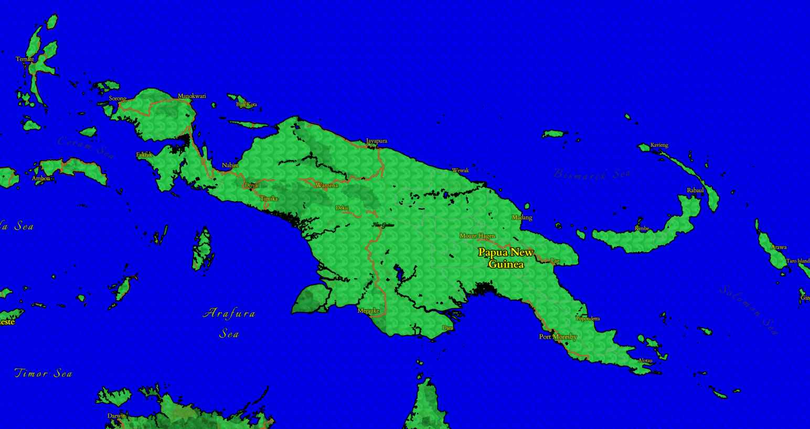
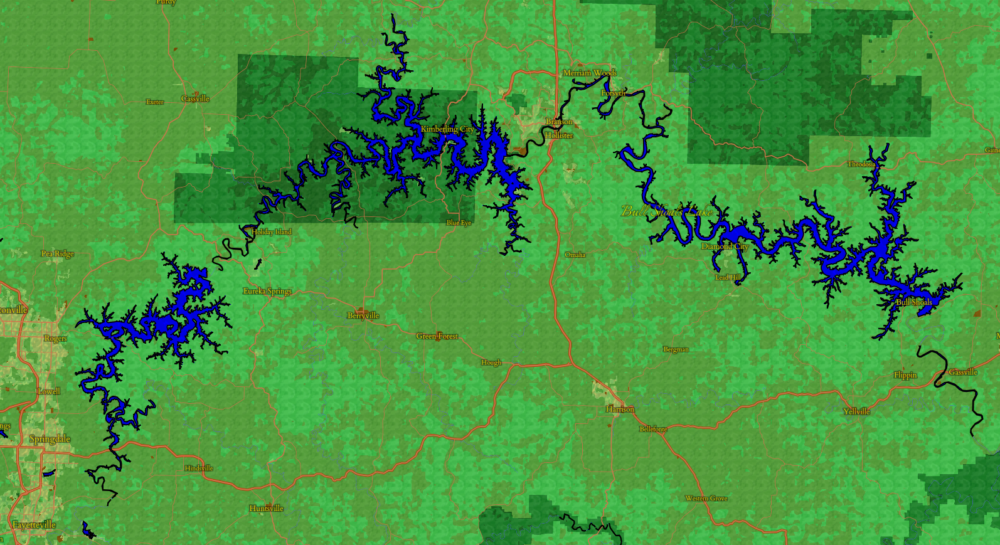
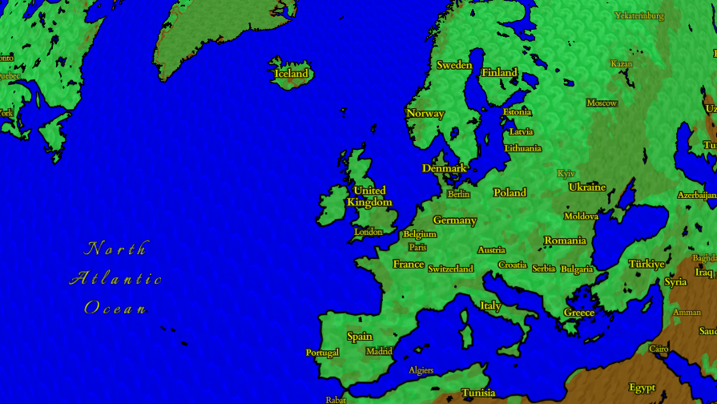
 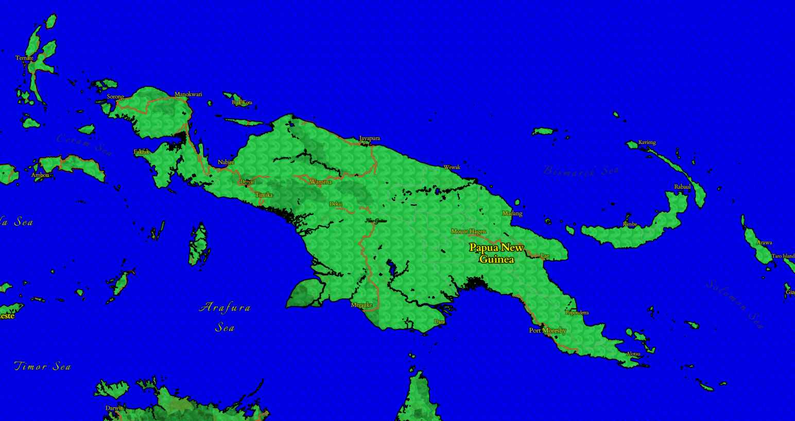
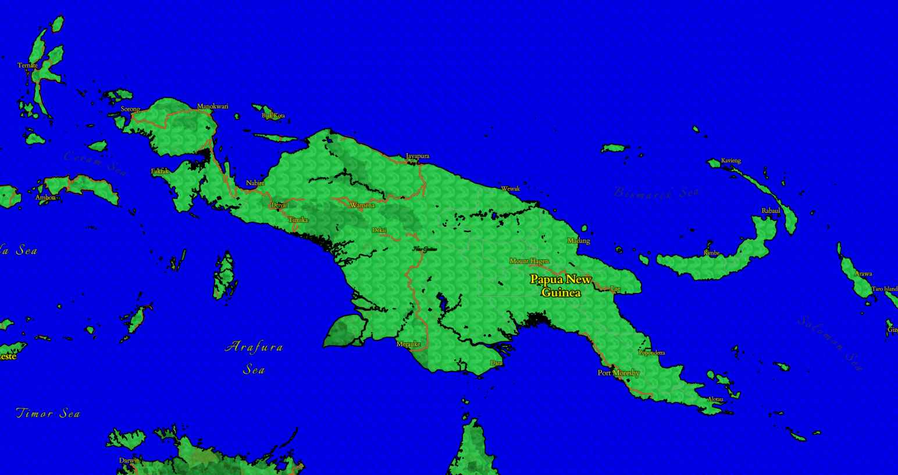
 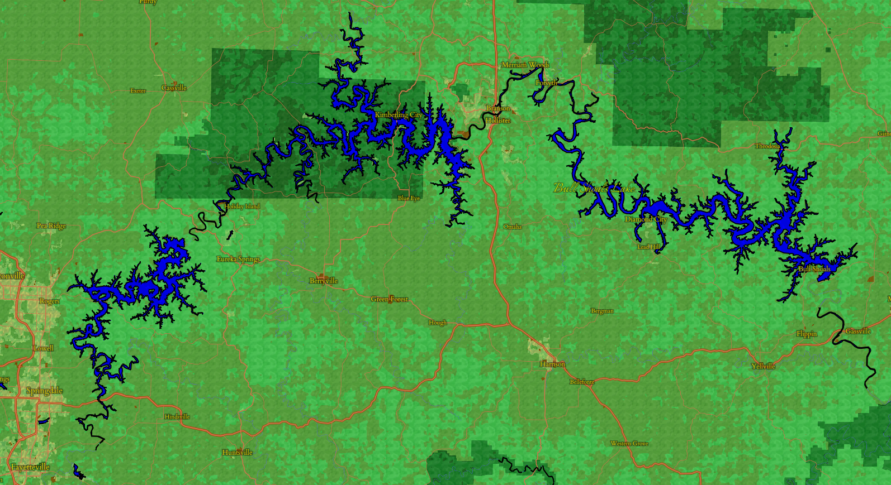
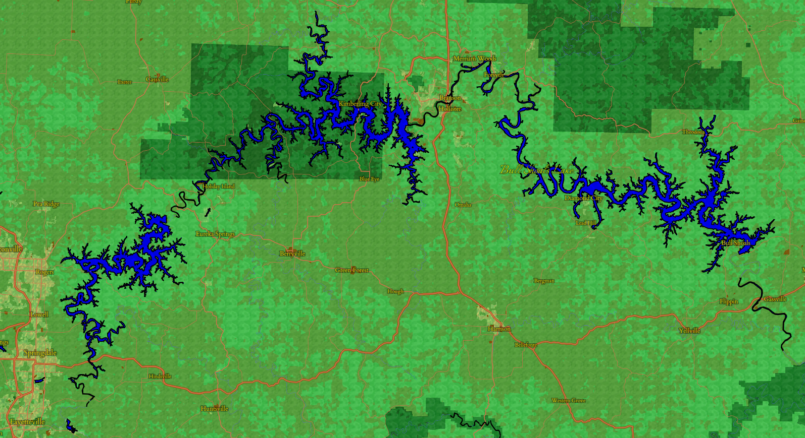

 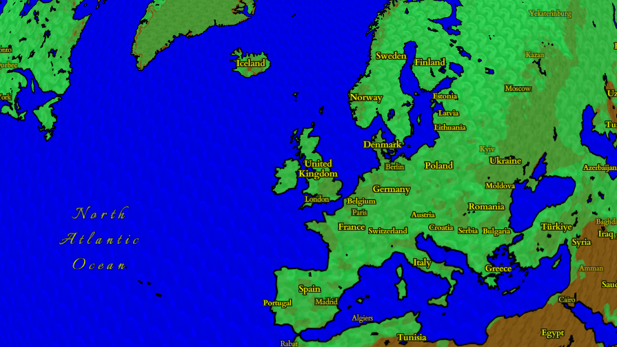
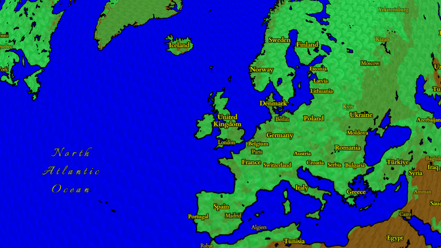
We can take a look at a few different places to see the style in action, starting with Madison, Wisconsin.
When zooming into the map, the green land cover goes away and reveals a base brown with a different bumpy texture.
More zoomed out, we can see the black border between land and water, like on Papua New Guinea.
This view of the Upper Peninsula of Michigan shows the diversity of greens in the design from the different categories of land.
The Bull Shoals Lakes look especially striking here with that border!
Water features look especially striking because of the rich, vibrant blue and the subtle wavy texture.
This more zoomed in shot of Derry, Northern Ireland shows the texture of the buildings that is meant to be smoother.
The yellow type with a black halo pulls from the serif-styled labels in religious stained glass.
Play around the full map.
Credits:
Map created with Mapbox Studio
Data from openstreetmap